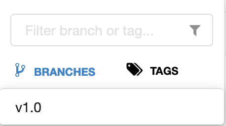

cd /projects/rh-mlops-model-deploy
git checkout -b prod
git merge stage
git push -u -v origin prod9 Promote to Production
Promote To Production
The model is working properly in staging and can now be deployed to production. The production environment will be under the user1-prod namespace.
Using container images allows us to have consistency across environments. Containers allows us to package our model and its dependencies into an image and will run the same regardless of their deployment environment.
We will be using CodeReady Workspaces, and log in using the username and
password you’ve been assigned (e.g. user1/r3dh4t1!):
Image Promotion
To promote the image from staging to production environment, we are going to merge our stage to prod deployment branch. If there is a need for an approval process, Red Hat Process Automation Manager can be used to approve the Pull Request before the changes are merged.
You can now login to Argo CD with your user1/r3dh4t1! credential to view the changes that Argo CD is making to the production environment.
Model Testing
Once the model has been deployed and is running, you can now run some simple tests. The test will send sample data to the prediction endpoint.
/projects/rh-mlops-workshop/bin/prod-mon-test.shTag it!
Now the model has been tested in production, we now can tag it as v1.0.
cd /projects/rh-mlops-workshop
git checkout stage
git tag -a v1.0 -m "v1.0"
git push -v origin v1.0The tag has now been pushed to your git repository.
